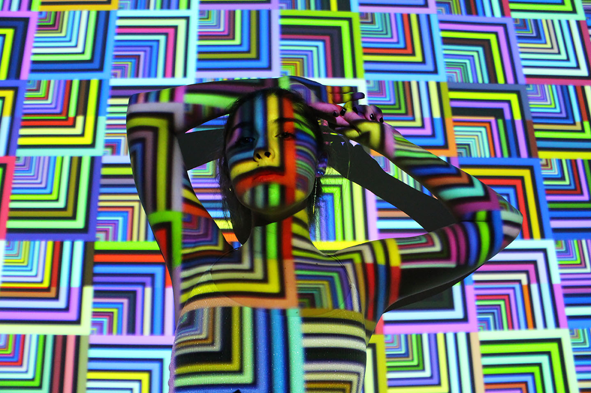
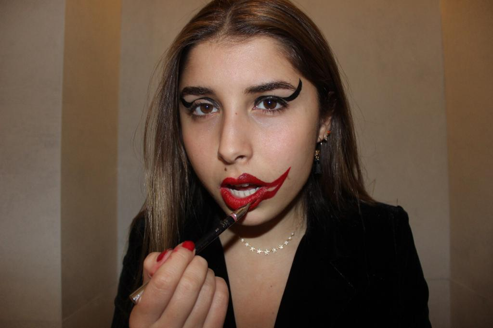
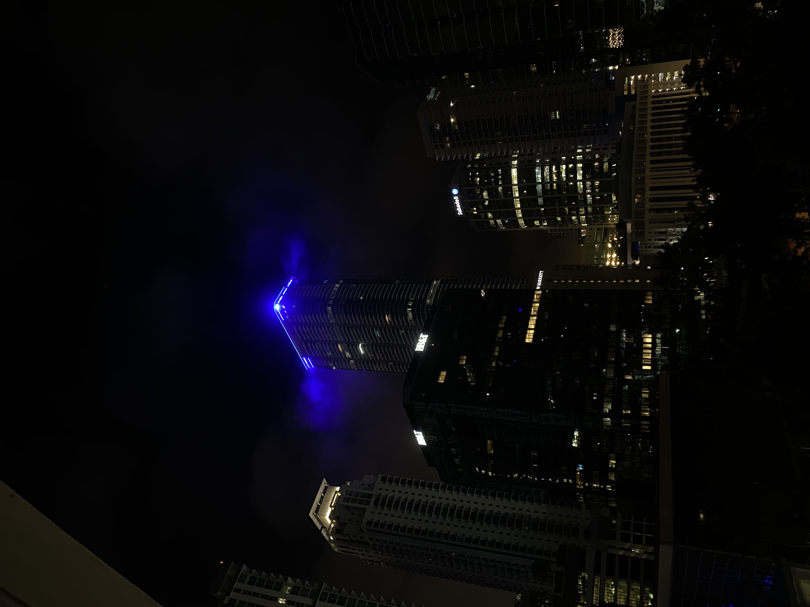
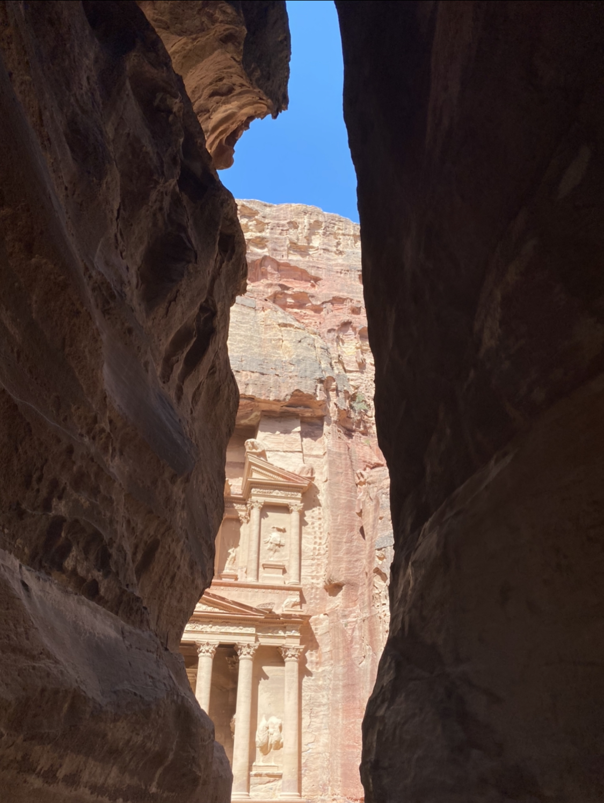

This was a series of photographs I took of my friend. The inspiration behind this photoshoot came from a television show I was watching at the time called Euphoria. This show tackled many modern issues in a very beautiful style. Vibrant colors, dramatic posing, and using mixed media was my best way of portraying that through this series.

This photo was the result of me exploring the idea of projections, and how a human model can interact with a very geometrical and intricate projection. The result was a very beautiful juxtaposition of the organic and the artificial.

This photo was part of a prompt called "Organized Chaos" Which I decided to portray through the action of a girl putting make-up on. While her make-up looks unconventional, or chaotic, you can still recognize that there is some intention, and organization behind it.

This photo was taken in Miami, Florida. I thought that this shot was interesting as the light from the building was being reflected onto the fog around the top of the building. Which created this very interesting effect. This photo was taken in Wadi Rum, a desert area in Jordan in which many legendary films such as The Martian, Indiana Jones, and Star Wars were filmed. this dessert is known for its beautifully colored sand, and amazing landscapes and sights to see!

This photo was taken on a 4km hike to the site of Petra, in Jordan. The photo shows my arrival to the treasury after the hike, as the structure begins to appear through the cliffs.